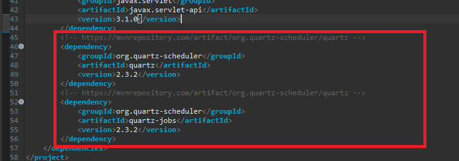
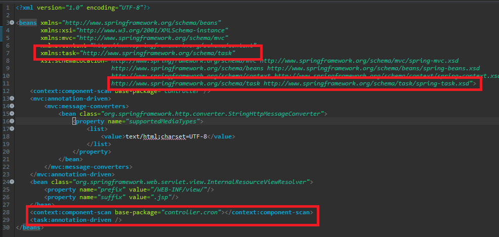
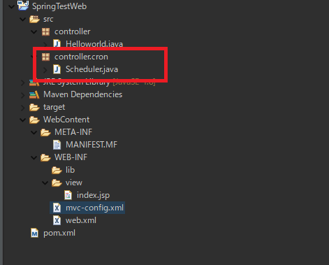
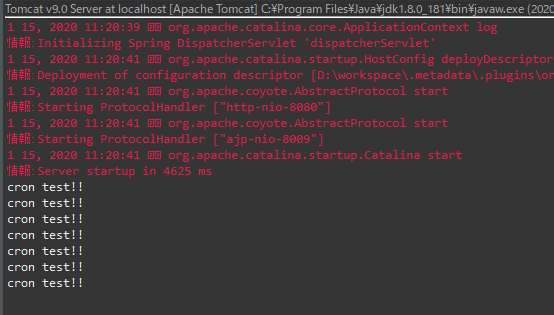

[Java] JSPのSpring環境でschedulerのcronを使う方法
こんにちは。明月です。
この投稿はJSPのSpring環境でschedulerのcronを使う方法に関する説明です。
以前に私がJSP環境でspring web frameworkを利用してウェブ環境を構築する方法に関して説明したことがあります。
link - [Java] EclipseでSpring web frameworkを利用してウェブサービスプロジェクトを立ち上がる方法
cronとは簡単に考えるとスケジューラだと思えば良いです。以前、unix時代に使ったschedulerのユーティリティの名前ですが、これがlinuxにてcronスケジューラになってJava系のスケジューラの名前もcronになったらしいです。
スケジューラはプログラムサービスで運用することよりOSで運用することがサーバ管理側でもいろいろことが楽ですが、スケジューラ特性によってウェブサービスの中で運用する時も必要なのでspringウェブサービスでも使えます。
ウェブサービスで使えるスケジューラだと思えば、基本的にサービス内で生成する必要がないlogデータ削除、掲示板サービスの投稿予約システム、仕様によってデータベース整理など様々作業を予想できます。
でも、OS環境で使えるスケジューラとウェブサービス内で使えるスケジューラを明確に区切りする必要があります。例えば、ロードバランシング(分散システム)で分けている2台以上のウェブサービスの場合、各ウェブサービスでcronジョブスケジューラが各実行中なので重複処理が発生可能性もあります。
この時にはウェブサービスではなく別途のスケジューラサービスを構築するかOSスケジューラ、DBスケジューラを利用してスケジューラを実行することが正しいです。(以外でこんなミスが多いです。)
ウェブサービス内で使えるスケジューラはロードバランシングがない単一システムでキャッシュリロード、セッション、tempファイル、ログファイルなどを管理します。
さて、spring環境でcronを設定する方法に関して説明します。
pom.xmlで二つのライブラリを登録しましょう。
repository - https://mvnrepository.com/artifact/org.quartz-scheduler/quartz
repository - https://mvnrepository.com/artifact/org.quartz-scheduler/quartz-jobs
<!-- https://mvnrepository.com/artifact/org.quartz-scheduler/quartz -->
<dependency>
<groupId>org.quartz-scheduler</groupId>
<artifactId>quartz</artifactId>
<version>2.3.2</version>
</dependency>
<!-- https://mvnrepository.com/artifact/org.quartz-scheduler/quartz-jobs -->
<dependency>
<groupId>org.quartz-scheduler</groupId>
<artifactId>quartz-jobs</artifactId>
<version>2.3.2</version>
</dependency>

そしてspring mvc configファイルを修正しましょう。
taskスキーマを追加してdrivenを使い設定すればよいです。
<?xml version="1.0" encoding="UTF-8"?>
<!-- cronを使えるようにxmlns:taskを追加する。xsi:schemaLocationにもtaskスキーマurlを追加する。-->
<beans xmlns="http://www.springframework.org/schema/beans"
xmlns:xsi="http://www.w3.org/2001/XMLSchema-instance"
xmlns:mvc="http://www.springframework.org/schema/mvc"
xmlns:context="http://www.springframework.org/schema/context"
xmlns:task="http://www.springframework.org/schema/task"
xsi:schemaLocation="http://www.springframework.org/schema/mvc http://www.springframework.org/schema/mvc/spring-mvc.xsd
http://www.springframework.org/schema/beans http://www.springframework.org/schema/beans/spring-beans.xsd
http://www.springframework.org/schema/context http://www.springframework.org/schema/context/spring-context.xsd
http://www.springframework.org/schema/task http://www.springframework.org/schema/task/spring-task.xsd">
<context:component-scan base-package="controller"/>
<mvc:annotation-driven>
<mvc:message-converters>
<bean class="org.springframework.http.converter.StringHttpMessageConverter">
<property name="supportedMediaTypes">
<list>
<value>text/html;charset=UTF-8</value>
</list>
</property>
</bean>
</mvc:message-converters>
</mvc:annotation-driven>
<bean class="org.springframework.web.servlet.view.InternalResourceViewResolver">
<property name="prefix" value="/WEB-INF/view/"/>
<property name="suffix" value=".jsp"/>
</bean>
<!-- drivenを追加する。base-packageは上のcontext drivenみたいにcronクラスを検索を実行するためにパッケージを入力する。 -->
<context:component-scan base-package="controller.cron"></context:component-scan>
<task:annotation-driven />
</beans>

私の場合はcontroller.cronパッケージで設定しました。

controller.cronパッケージでSchedulerクラスを追加しました。
package controller.cron;
import org.springframework.scheduling.annotation.Scheduled;
import org.springframework.stereotype.Component;
// cronスケジューラクラスを宣言するアノテーション
@Component
public class Scheduler {
// cron文法でスケジューラが実行されるサイクルを設定(別途でcronスケジューラ文法に関して説明する。)
@Scheduled(cron = "* * * * * *")
public void run() {
// コンソール出力
System.out.println("cron test!!");
}
}
上のcronスケジューラは毎秒実行する形式のスケジューラです。

ウェブサービスを実行すればcronスケジューラが実行されて、run関数が毎秒に呼び出されることを確認できます。
上のScheduledアノテーションでcronサイクルを設定した文法に関する説明です。
私の場合はアスタリスクマーク(*)6個をスペース区切りで使いましたが、実は基本7個アスタリスクマーク(*)でスペース区切りで使います。
* * * * * * *
秒 分 時 日 月 曜日 年(省略可能 - 省略時には毎年の意味)
cronは上の7桁の表現式でサイクルを設定します。
アスタリスクマーク(*)はALLの意味で毎秒、毎分、毎時、毎日、毎月、毎曜日、毎年の意味です。
日、曜日の場合はアスタリスクマーク(*)を代わりにクエスチョンマーク(?)を使えます。(意味は違いますが、結果は同じです。)
そしてその以外に指定する時は数字で表示します。参考に曜日の場合は1から7まで数を使います。(1:日 2:月 3:火 4:水 5:木 6:金 7:土)
例えば、「0 0 10 1 1 1 」という表現式なら毎年(省略)1月1日10時00分00秒の月曜日も場合(火曜日の場合は実行しません。)実行しましょうという文法になります。
指定する日付を二つ以上ならコンマで区切りします。
例えば、「0,10 0 10 * * *」といえば毎年(省略)毎月毎日10時00分00秒、10秒に実行しましょうと意味になります。
秒の設定で「0,10,20,30,40,50」といえば0秒、10秒、20秒、30秒、40秒、50秒に実行しましょうという意味ですが、楽に「0/10」で表現できます。「0/10」は10秒たびに実行する意味です。
ハイフンで範囲を設定することができますが、「1-10」だと「1日から10日まで」という意味になります。
特殊表現式で「L,W,#」がありますが、「L」は最後の日の意味を持っています。日と曜日だけで使えます。日で「L」を使うと月の最後の日、曜日の場合は土曜日になります。
Wは日だけで使えますが、近い平日という意味です。10Wの場合は10日が土曜日なら9日、日曜日なら11日に実行する表現式です。
#は曜日に使える表現式です。2#2なら二つ目の週の月曜日に実行する意味です。
| 表現式 | 説明 |
|---|---|
| * | ALLの意味で毎秒、毎分、毎時、毎日、毎月、毎年 |
| ? | 日、曜日だけで使えることで条件なしという意味 |
| / | サイクルの繰り返しの意味 |
| - | 範囲の意味 |
| L | 日、曜日だけで使えることで最後の日の意味 |
| W | 日だけで使えることで指定された近い平日 |
| # | 曜日だけで使えることで週#曜日という意味 |
ここまでJSPのSpring環境でschedulerのcronを使う方法に関する説明でした。
ご不明なところや間違いところがあればコメントしてください。
- [Java] WebSocketを利用してユーザ(サイト運用者)が他のユーザとチャットする方法2021/06/15 17:20:08
- [Java] HttpConnectionを利用してウェブページを取得する方法2020/05/20 23:53:24
- [Java] Jsoupを利用してXMLファイル(HTML)を扱う方法2020/05/19 19:32:21
- [Java] 日付フォーマット(SimpleDateFormat)を使う方法2020/03/25 00:36:53
- [Java] サーブレット(Servlet)の環境でファイルアップロード(プログレスバーでファイルアップロード状態を表示する方法)する方法2020/03/24 00:48:21
- [Java] Spring環境でファイルアップロード(プログレスバーでファイルアップロード状態を表示する方法)する方法2020/03/22 23:15:12
- [Java] FTPに接続してファイルをダウンロード、アップロードする方法(FTPClient)2020/03/20 02:44:36
- [Java] JSPのSpring環境でschedulerのcronを使う方法2020/03/18 00:24:32
- [Java] POIを利用してExcelを扱う方法2020/03/17 01:48:00
- [Java] PDFを出力する方法(itextpdf)2020/03/13 00:47:31
- [Java] ログライブラリ(log4j)を使う方法2020/03/12 00:54:39
- [Java] Jsonタイプのデータを使う方法(Gsonライブラリ)2020/03/11 00:30:15
- [Java] Base64をエンコード、デコードする方法2020/03/09 10:24:01
- [Java] cmdコマンドを実行するための方法2020/03/06 18:01:10
- [Java] メール(javax.mail)を発送する方法2020/03/05 20:07:49
- [C#] 42. ファイルを扱い(IO)とファイルメタデータ(FileInfo)を使い方2021/10/01 20:10:21
- [C#] 41. Taskクラスとasync、awaitを使い方2021/10/01 18:59:14
- [Javascript ] WebのFull calendar(スケジュールカレンダー)の使い方法2021/07/15 21:35:36
- [Java] 56. Web serviceのサーブレット(Servlet)で初期化作業(properties設定)2021/07/02 17:10:36
- [Java] 55. Spring frameworkに文字化けを解決する方法(Encoding設定)2021/06/30 16:37:16
- [Java] 54. Spring frameworkでWeb filterを使う方法2021/06/29 18:25:12
- [Java] 53. ウェブサービス(Web service)でエラーページを処理する方法2021/06/25 13:35:54
- [Design pattern] 1-3. ファクトリメソッドパターン(Factory method pattern)2021/06/23 19:45:37
- [Java] WebSocketでチャット履歴をローディングする方法2021/06/15 18:34:45
- [Java] WebSocketを利用してユーザ(サイト運用者)が他のユーザとチャットする方法2021/06/15 17:20:08
- [Design pattern] 1-2. ビルダーパターン(Builder pattern)2021/06/11 19:06:28
- [Design pattern] 1-1. シングルトンパターン(Singleton pattern)2021/06/09 19:40:05
- [Design Pattern] デザインパターンの紹介2021/06/08 20:42:36
- [Tools] Dbeaver(無料Sql queryブラウザツール)2021/04/28 18:26:49
- [Bootstrap] HTMLデザインのフレームワークのBootstrap紹介2020/07/30 19:06:36